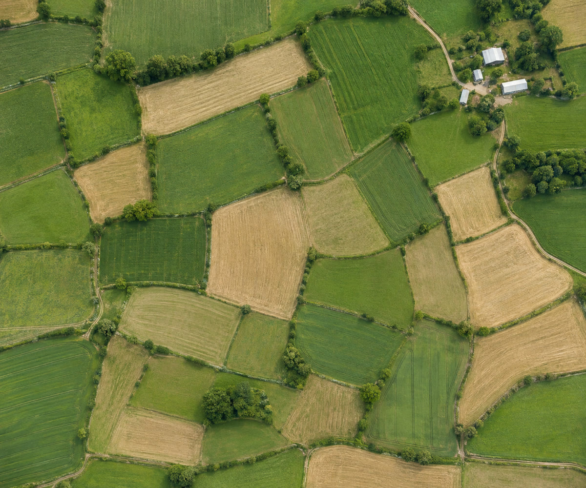
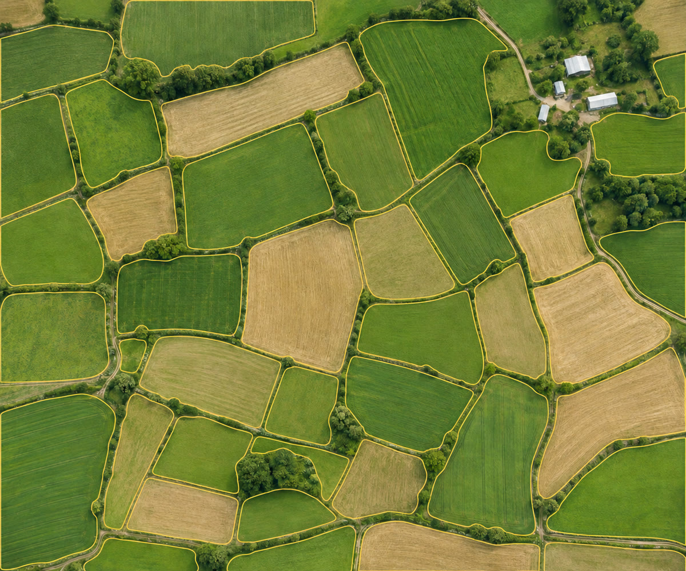
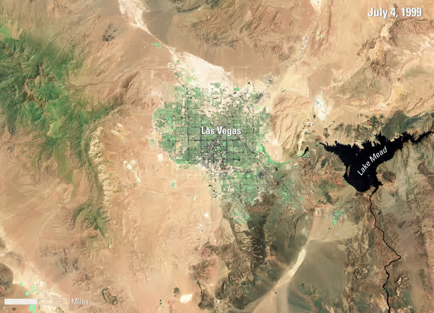
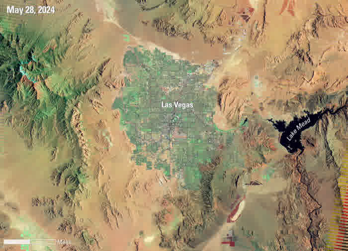
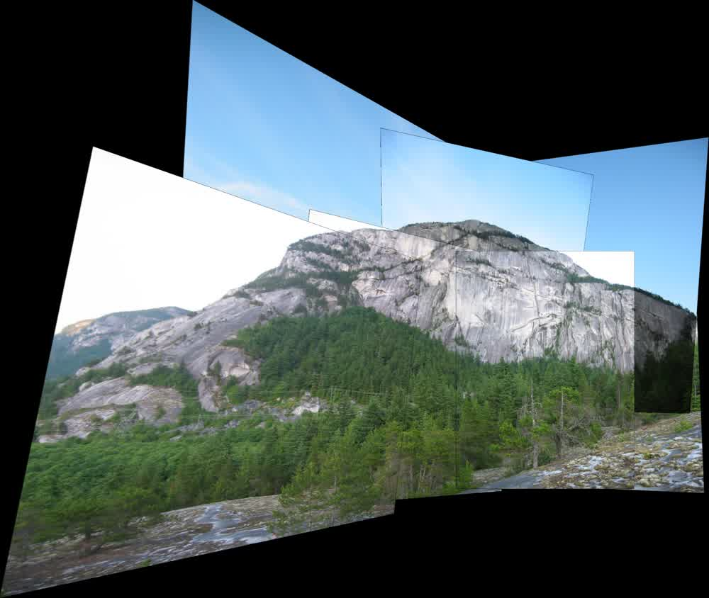
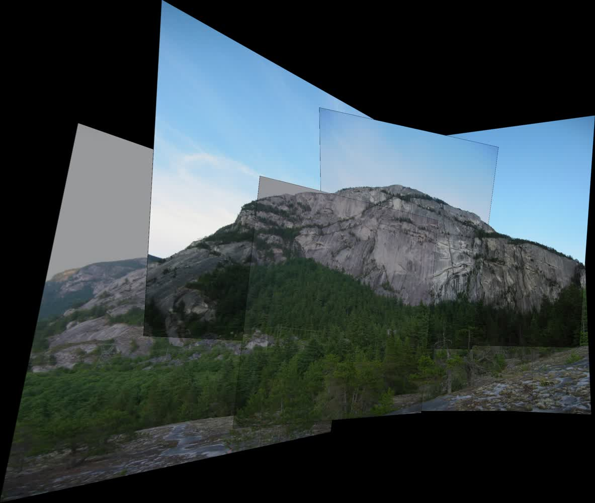
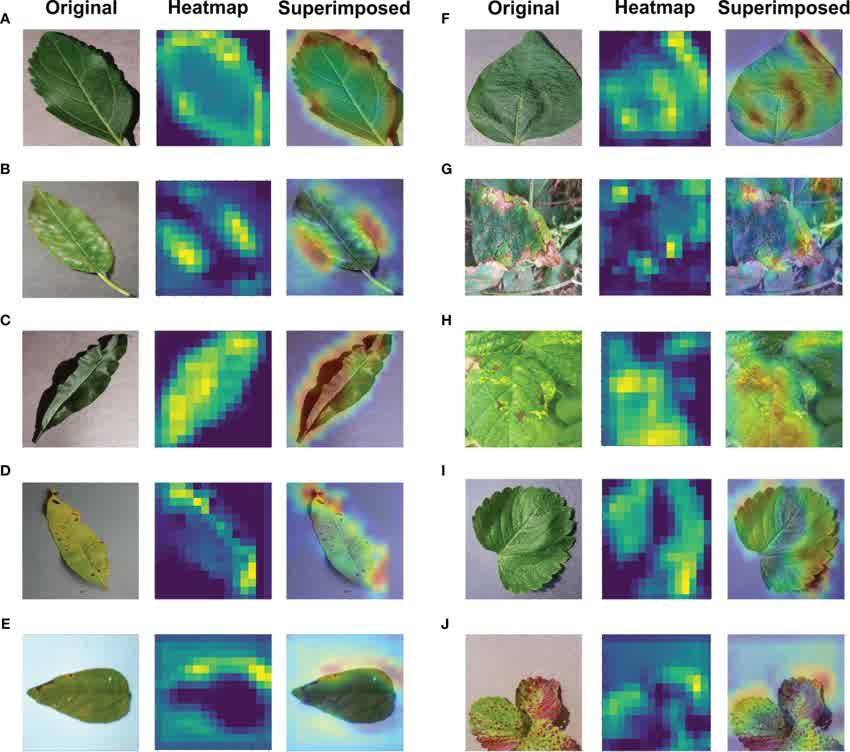
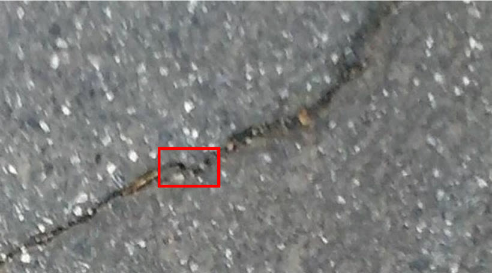

CAPABILITIES / 算法能力
面向场景的算法。
六个方向，35 项算法。选择分类，直接查看效果。
01 /地物提取
看清每一处边界。
从影像中识别建筑、水体与地块。


原始影像边界示意地块提取
识别农田边界，呈现地块轮廓。
效果示意 · 拖动查看查看完整示例

- 输入
- 遥感影像
- 输出
- 地块边界与分布
03 /时空变化
读懂时间留下的变化。
让不同时间的影像，呈现变化。


1999 年影像2024 年影像地物变化检测
对比两期影像，观察建成区扩展与水域范围变化。
双期影像对照 · 拖动查看查看原始影像

- 输入
- 对齐的多期遥感影像
- 输出
- 地物变化区域
两期观测影像用于变化对照。
04 /影像处理
让细节重新清晰。
还原纹理，改善图像的可读性。


处理前处理后匀光匀色
对比曝光补偿前后的影像，观察色彩一致性的改善。
前后对比 · 拖动查看查看原始影像

- 输入
- 多幅待处理影像
- 输出
- 色调一致的影像
05 /农林生态
理解土地上的生长。
识别作物与生物，观察生态变化。

病虫害检测
展示叶片病害分类结果的模型关注区域。
示例画面查看完整示例

- 输入
- 作物或树木图像
- 输出
- 叶片病害类别与模型关注热图
06 /安全与质检
让细微异常被看见。
从巡检影像中寻找需要关注的异常。

 原始图像分割结果
原始图像分割结果道路裂缝检测
从路面图像中提取裂缝轮廓，输出像素级分割结果。
前后对比 · 拖动查看查看完整示例

- 输入
- 路面图像
- 输出
- 裂缝轮廓或分割掩膜
DEMONSTRATIONS / 动态演示
看见算法的运行。
从目标识别到连续追踪，直接观看算法效果。
多类型视觉结果标注
以检测框、轮廓与标签呈现识别输出，便于业务复核。